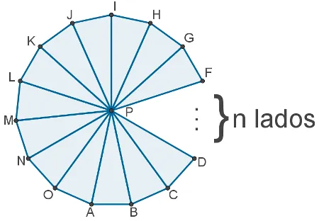

Um polígono regular com n lados é uma figura geométrica plana que possui n lados
de igual comprimento e n ângulos internos congruentes. As informações detalhadas
sobre polígonos regulares com n lados incluem:
Definição:
- Um polígono regular com n lados é uma figura composta por n segmentos de linha
(lados) que formam uma figura fechada com n ângulos internos congruentes.

Elementos Principais:
- Os lados de um polígono regular têm todos o mesmo comprimento.
- Os ângulos internos do polígono regular são todos iguais.
- Os vértices são os pontos onde os lados se encontram.
Medida dos Ângulos Internos:
- A medida de cada ângulo interno de um polígono regular com n lados pode ser
calculada usando a fórmula: Medida do Ângulo Interno = (n - 2) × 180° / n, onde n
é o número de lados. Isso é derivado do fato de que a soma dos ângulos internos de
qualquer polígono é sempre 180° menos o número de lados vezes 360° dividido por n.
Perímetro:
- O perímetro de um polígono regular com n lados é a soma dos comprimentos dos n lados.
Área:
- A área de um polígono regular pode ser calculada de várias maneiras, dependendo
do tipo de polígono. Para um polígono regular, uma fórmula comum é:
Área = (perímetro × apotema) / 2, onde o apotema é a distância do centro do polígono
ao ponto médio de um lado.
Simetria:
- Polígonos regulares têm simetria em relação a seus ângulos e lados, o que significa
que podem ser divididos em metades iguais que se encaixam perfeitamente.
Usos Práticos:
- Polígonos regulares comuns incluem o triângulo equilátero (n=3), o quadrado (n=4),
o pentágono (n=5), o hexágono (n=6) e assim por diante. Eles são frequentemente
encontrados em design, arquitetura e geometria.
Polígonos Estrelados:
- Além dos polígonos regulares simples, também existem polígonos estrelados regulares,
que têm ângulos internos e lados congruentes, mas apresentam um padrão de estrela em
sua forma.